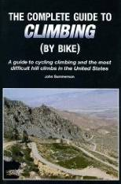

|
Check out Tim Clark's Low-Key Hillclimb power-to-time converter! This uses high-resolution route profile data of each climb under the assumption of uniform power, accounting for wind resistance, rolling resistance, and, of course, overcoming gravity! Only approximate for runners.... Or, you might also want to check out Michael Barnes' Power-Speed Analysis Excel Spreadsheet, with an accompanying PDF article!
Returning again, after the Grand Return of 2006, and when You Just Couldn't Get Enough in 2007, it's time to Get Over It with the 2008 edition of the Low-Key Hillclimbs. You are ready.
The Low-Key Hillclimbs are back and better than ever for 2008! Low-Key founder and refounder Kevin Winterfield remains in exile in the barren lands, but Low-Key continues with 2008 series coordinator Dan Connelly. Come on out, and if you've enjoyed climbs in the past, volunteer to help out or even coordinate a week! Coordinators get to ride the entire series for free, while volunteers get 2 free weeks per week volunteering () !
The philosophy of the Low-Key series is to allow each cyclist, no matter what his or her level, no matter what his or her speed, to establish goals, and meet them. It's all about the hill, the rider, and being at one with the bike. We'll see you there.
Each week, overall points will be allocated in men's and women's categories, with standings also recorded in rider-defined categories -- pick your own! Overall series rankings will also be maintained, with riders accumulating points from their best results.. only results for half (rounded up) of the climbs to date are required.
Team scores will also be kept, with points to the top three from each team.
Ride with an established team, or create one just for the series!
Details of the scoring system!
|  |
| John Sommerson's excellent Complete Guide to Climbing by Bike is a 2008 Low-Key sponsor! |
We need volunteers to make this series work! Volunteers get two free rides for each one at which they help out, plus get pro-rating of points so they don't miss out on overall standings. Coordinators get to ride the whole rest of the series for free!
Check out the list of volunteers so far!
Fire off an email () if interested!
Each week, registration will open an hour before the listed time, closing 15 minutes before. No pre-reg. $10 voluntary donation, volunteers get 2 weeks free, under 18 years old are free, coordinators are free! Waivers available at registration. Two free entries if you volunteer, three if you're a coordinator!
If you can, you'll want to print and fill out the PDF release form before the event.
We have an email list! See http://sports.groups.yahoo.com/group/lkhc/.
To avoid congestion and other headaches please do the following:
Better yet, ride to the start, or take public transit! The relaxed Low-Key start time make riding and/or taking the train an excellent option. See Caltrain's website for train schedules, or 511.org for BART and bus options. Bike route info is also available from 511.org.
The low-keys are just what you want them to be. We do time and keep track of times and points, but by no means is that the main reason for these climbs. They're for having fun, checking out the area climbs, and meeting people.
A wide spectrum of folks climb this series - and you can create your own team and category. Or, better yet, choose an existing category, for a bit of friendly Low-Key competition.
For those new to Low-Keyin', the process is simple:
Email Dan Connelly